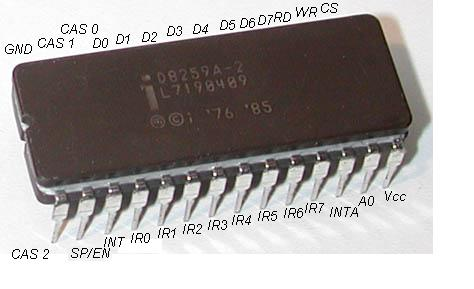

8259A PIC Microcontroller
 8259A PIC Microcontrollers with all pins labeled.
This tutorial covers a very important topic: The Programmable Interrupt Controller. We will need to initialize this microcontroller by mapping it to our IRQ's. This will be needed when setting up interrupts, and handling interrupt requests.
This is our first controller tutorial. All of these controller tutorials go very deep in each device, while building a workable interface to handling them. Remember that, as we are in protected mode, we have nothing to guide us. One wrong move can cause unpredictable results. As we have no helping hand, we have to communicate with each controller directly. Because of this, we have emphasized hardware programming concepts all throughout this series so our readers have more experience and better understanding of hardware level programming.
This tutorial puts everything we learned to the test. I will do my best to keep things simple. the 8259A Microcontroller, Also known as the Programmable Interrupt Controller (PIC).
Get Ready
This is our first of many microcontroller programming tutorials. We will cover nearly every asset of each microcontroller as we cover them. The main series will reference these tutorials on an as needed bases to help cover what we need these controllers for.
This tutorial is fairly complicated. We will cover the 8259A Microcontroller from both hardware and software perspectives, and understand exactly how it connects and interacts with the PC. We will also cover every command, register, and part of this microcontroller.
History
To do - We plan on adding this section soon
Because the 8259A PIC handles hardware interrupts, we should first have a basic understanding of what interrupts are, and how they work.
Interrupts
An Interrupt is an external asynchronous signal requiring a need for attention by software or hardware. It allows a way of interrupting the current task so that we can execute something more important.
Not to hard. Interrupts provide a way to help trap problems, such as divide by zeros. If the processor find a problem with the currently executing code, it provides the processor alternative code to execute to fix that problem.
Other interrupts may be used to provide a way to service software as routines. These interrupts can be called by any software from within the system. This is used a lot for System API's, which provide a way for ring 3 applications to execute ring 0 level routines.
Interrupts provide a lot of use, especially as a way of receiving information from hardware that may change its state at asynchronous times.
Interrupt Types
There are two types of interrupts: Software Interrupts and Hardware Interrupts.
Software Interrupts
Software Interrupts are interrupts implemented and triggered in software. Normally, the processor's instruction set will provide an instruction to service software interrupts. For the x86 architectures, these are normally INT imm, and INT 3. It also uses IRET and IRETD instructions.
For example, here we generate an interrupt through a software instruction:
int 3 ; generates interrupt 3
These instructions may be used to generate software interrupts and execute Interrupt Routines (IR)'s through software.
We will not cover software interrupts here. The 8259A PIC Microcontroller only services hardware interrupts. Software interrupts will be covered in another tutorial.
Hardware Interrupts
A hardware interrupt is an interrupt triggered by a hardware device. Normally, these are hardware devices that require attention. The hardware Interrupt handler will be required to service this hardware request.
Spurious Interrupt: This is a hardware interrupt generated by electrical interference in the interrupt line, or faulty hardware. We do NOT want this!
Interrupt Modes
There are several modes and classes of interrupts that we will need to cover. In programming the PIC, we will need to choose a mode.
Note: This section may require some knowledge of the 8259A PIC hardware pin layout. this is discussed in the next section.
Level Triggered
A Level Triggered interrupt is determined to happen when the Interrupt Request (IR) line on the PIC has current (1). A device sends a signal (Setting this line to active), and keeps it at that state until the interrupt is serviced.
Level Triggered interrupt lines may be shared by multiple interrupts if the circuit is designed to handle it.
This mode is the preferred mode because of how the lines are shared. When an IR line is active, the CPU searches through all of the devices sharing the same line until it finds what device is activating the signal. After finding the device, the CPU rechecks all of the devices again to insure there are no other devices that also need service.
A problem with this approach is, if there is an interrupt with higher priority that needs to be serviced, all other interrupts will be permanently blocked until the other interrupts are serviced. After all, only one line can be active at a given time.
Edge Triggered
Edged Triggered interrupts are determined to happen when the Interrupt Request (IR) line on the PIC has current (1). A device sends a signal (Setting this line to active) through a single pulse, and returns the line to its previous state.
Edged Triggered interrupt lines may be shared by multiple interrupts if the circuit is designed to handle it.
If the pulse is too short to be detected, then it will not be detected.
As these are only pulses of current that signals interrupt requests, Edged triggered mode does not have the same problems that Level triggered does with shared IRQ lines.
Of course, we still run into the possibility of an interrupt being missed, as it is just a single pulse of current being sent through the IRQ line. This has caused early computer lockups of the CPU.
However, through recent times, these lockups have decreased through time.
Hybrid
Both of these modes have their pros and cons. a lot of systems implement a hybrid of both of them. More specifically, Most systems check for both Edge triggered and Level triggered interrupts on the Non Maskable Interrupt (NMI) pin on the CPU. The purpose of this is that the NMI pin is used to signal major problems with the system that can cause big problems, or entire system malfunctions, possibly hardware damage.
The Non Maskable Interrupt is just that -- It cannot be disabled or masked off by any device. This insures, along with having a hybrid setup, that if the NMI pin is set, the system can die peacefully without big problems.
Message Signaled
These types of hardware interrupts do not use a physical interrupt line. Instead, they rely on another medium, such as the system bus, to send messages over.
These types of interrupts cause the device to only send a pulse of current over the medium, similar to edge triggered interrupts.
These types of systems may use a special interrupt line on its control bus indicating a message signaled interrupt number. As these numbers are sent over the medium as a series of bits, they do not have the limitations of the other interrupt types, which are limited to a single interrupt line. As such, they can manage as much interrupts as the underlaying system allows. These types of interrupts also support sharing of interrupt vectors. PCI Express uses these types of interrupts a lot.
Thats all
Okay, a lot of info here 😀 The 8259A only has support for Level triggered and Edge triggered interrupts. Because of this, Those should be your primary focus when working with the 8259A Microcontrollers.
Interrupt Vector Table
The Interrupt Vector Table (IVT) is a list of Interrupt Vectors. There are 256 Interrupts in the IVT.
Interrupt Routines (IR)
An Interrupt Routine (IR) is a special function used to handle an Interrupt Request (IRQ).
When the processor executes an interrupt instruction, such as INT, it executes the Interrupt Routine (IR) at that location within the Interrupt Vector Table (IVT).
This means, it simply executes a routine that we define. Not to hard, huh? This special routine determines the Interrupt Function to execute normally based off of the value in the AX register. This allows us to define multiple functions in an interrupt call. Such as, the DOS INT 21h function 0x4c00.
Remember: Executing an interrupt simply executes an interrupt routine that you created. For example, the instruction INT 2 will execute the IR at index 2 in the IVT. Cool?
IVT Map
The IVT is located in the first 1024 bytes of physical memory, from addresses 0x0 through 0x3FF. Each entry inside of the IVT is 4 bytes, in the following format:
- Byte 0: Offset Low Address of the Interrupt Routine (IR)
- Byte 1: Offset High Address of the IR
- Byte 2: Segment Low Address of the IR
- Byte 3: Segment High Address of the IR
Notice that each entry in the IVT simply contain the address of the IR to call. This allows us to create a simple function anywhere in memory (Our IR). As long as the IVT contains the addresses of our functions, everything will work fine.
Okay, Lets take a look at the IVT. The first few interrupts are reserved, and stay the same.
x86 Interrupt Vector Table (IVT)
| Base Address | Interrupt Number | Description |
|---|---|---|
| 0x000 | 0 | Divide by 0 |
| 0x004 | 1 | Single step (Debugger) |
| 0x008 | 2 | Non Maskable Interrupt (NMI) Pin |
| 0x00C | 3 | Breakpoint (Debugger) |
| 0x010 | 4 | Overflow |
| 0x014 | 5 | Bounds check |
| 0x018 | 6 | Undefined Operation Code (OPCode) instruction |
| 0x01C | 7 | No coprocessor |
| 0x020 | 8 | Double Fault |
| 0x024 | 9 | Coprocessor Segment Overrun |
| 0x028 | 10 | Invalid Task State Segment (TSS) |
| 0x02C | 11 | Segment Not Present |
| 0x030 | 12 | Stack Segment Overrun |
| 0x034 | 13 | General Protection Fault (GPF) |
| 0x038 | 14 | Page Fault |
| 0x03C | 15 | Unassigned |
| 0x040 | 16 | Coprocessor error |
| 0x044 | 17 | Alignment Check (486+ Only) |
| 0x048 | 18 | Machine Check (Pentium/586+ Only) |
| 0x05C | 19-31 | Reserved exceptions |
| 0x068 - 0x3FF | 32-255 | Interrupts free for software use |
Not to hard. Each of these interrupts are located at a base address within the IVT.
Interrupt Handling in Protected Mode (PMode)
Protected Mode requires each IVT entry to point to an interrupt routine (IR) defined within an Interrupt Descriptor Table (IDT). The IDT will be explained further in another tutorial, as it is not directly related to this tutorial.
The IDT is an array of Interrupt Descriptors, that describe the base address of the Interrupt Routine (IR) to execute, that contains extra information about it's protection level, segment information, etc. PMode uses a Global Descriptor Table (GDT) that defines the memory map that is being used. Most of the interrupt routines will be inside of a code descriptor, mapped by the GDT. This is why the IDT is required in PMode.
Do not worry if you do not understand this right now. For now, just think of it as an array of 256 function pointers, mapped exactly like that of the IVT (It normally is, anyways.)
Hardware Interrupts (Detailed)
There are two types of interrupts, those generated by software (Usually by an instruction, such as INT, INT 3, BOUND, INTO), and an interrupt generated by hardware.
Hardware interrupts are very important for PC's. It allows other hardware devices to signal the CPU that something is about to happen. For example, a keystroke on the keyboard, or a single clock tick on the internal timer, for example.
We will need to map what Interrupt Request (IRQ) to generate when these interrupts happen. This way, we have a way to track these hardware changes.
Lets take a look at these hardware interrupts.
x86 Hardware Interrupts
| 8259A Input pin | Interrupt Number | Description |
|---|---|---|
| IRQ0 | 0x08 | Timer |
| IRQ1 | 0x09 | Keyboard |
| IRQ2 | 0x0A | Cascade for 8259A Slave controller |
| IRQ3 | 0x0B | Serial port 2 |
| IRQ4 | 0x0C | Serial port 1 |
| IRQ5 | 0x0D | AT systems: Parallel Port 2. PS/2 systems: reserved |
| IRQ6 | 0x0E | Diskette drive |
| IRQ7 | 0x0F | Parallel Port 1 |
| IRQ8/IRQ0 | 0x70 | CMOS Real time clock |
| IRQ9/IRQ1 | 0x71 | CGA vertical retrace |
| IRQ10/IRQ2 | 0x72 | Reserved |
| IRQ11/IRQ3 | 0x73 | Reserved |
| IRQ12/IRQ4 | 0x74 | AT systems: reserved. PS/2: auxiliary device |
| IRQ13/IRQ5 | 0x75 | FPU |
| IRQ14/IRQ6 | 0x76 | Hard disk controller |
| IRQ15/IRQ7 | 0x77 | Reserved |
You do not need to worry to much about each device just yet. The 8259A Pins will be described in detail within the next section. The Interrupt Numbers listed in this table are the default DOS interrupt requests (IRQ) to execute when these events trigger.
In most cases, we will need to recreate a new interrupt table. As such, most operating systems need to remap the interrupts the PIC's use to insure they call the proper IRQ within their IVT. This is done for us by the BIOS for the real mode IVT. We will cover how to do this later in this tutorial as well.
8259 Programmable Interrupt Controller
The 8259 Microcontroller familiy is a set of Programmable Interrupt Controller (PIC) Integrated Circuits (ICs). Look back again at Tutorial 7... Under the Processor Architecture section, Notice that the processor has it's own internal PIC Microcontroller. This is very important to note.
Do to limitations in the circuit design, a PIC only supports 8 IRQ's. This is a big limitation. As additional devices were created, IBM quickly realized that this limitation is very bad. Because of this, Most motherboards contain a secondary (Slave) PIC microcontroller to work with the primary PIC inside the processor. Today, this is very common. A single PIC can be "cascaded" (capable of working with) another PIC. This makes it possible to support more IRQ's with additional PICs.
The More PIC's supported, the more IRQ's can be handled. They can be cascaded to support up to 64 IRQ's. Cool?
Remember: Most computers have 2 PIC's, 1 inside the processor, and 1 on the motherboard. Some systems may not have this.
Remember: Each PIC can only support up to 8 IRQ's.
Remember: Each PIC can communicate with each other, allowing up to 64 IRQ's depending on the number of PIC's.
Not to hard 😀
8259 Hardware
Understanding how microcontrollers work at the hardware level will help in understanding how the software side of things work. Remember that the PIC's are only used during a hardware interrupt.
8259A Microcontroller
At the top of this tutorial, there is an image of an actual 8259 Dual Inline Package (DIP), with all of the electronic pins labeled. To make things more understandable, we are going to represent the controller using a simpler graphic. The only pins these graphics do not display that the 8259 has are GND (Ground) and Vcc (Input Voltage). You can see these pins labeled in the picture on the top of this tutorial.
Lets first look at what we are going to be programming:

That's it. The 8259A Programmable Interrupt Controller.
Each of the lines in the above image displays each of the controllers electronic pins. These electronic pins are the connections between the controller and the rest of the system.
This is the chip that we will need to program in order to handle IRQ's within an operating system. Let's look at this closer at each pin. I bolded the important pins.
- WR Pin: This pin connects to a write strobe signal (One of 8 on a Pentium)
- RD Pin: This connects to the IOCR (Input Output Control Routine) signal.
- INT Pin: Connects to the INTR pin on the microprocessor.
- INTA Pin: Connects to the INTA pin on the microprocessor.
- A0 Pin: Selects different Command WORDS
- CS Pin: Enables the chip for programming and control.
- SP/EN Pin: Slave program (SP) / Enable Buffer (EN).
- Slave Program (1=Master, 0=Slave)
- Enable Buffer (Controls data bus transceivers when in buffered mode)
- CAS0, CAS1, CAS2 Pins: Used to output from master to slave PIC controllers in cascaded systems.
- D0 - D7 Pins: 8 bit Data connector pins.
There are a couple of important pins here. Pins D0-D7 provide a way for an external device to communicate with the PIC. This is like a small data bus--It provides a way to send data over to the PIC, like...An interrupt number, perhaps?
Remember that we can connect PIC's together. This allows us to provide support for up to 64 IR numbers. In other words--64 hardware interrupts. CAS0, CAS1, and CAS2 pins provide a way to send signals between these PIC's.
Look at the INT and INTA pins. Remember from the Processor Perspective section that the processors' own INT and INTA pins connect to these pins on the PIC. Remember that, when about to execute an interrupt, the processor clears the Interrupt (IF) and Trap flags (TF) from the FLAGS register, which disables the INTR pin. The PIC's INT pin connects to the processors' INTR pin.
This means that the processor, essentially, disables the PIC's INT pin when executing an interrupt.
With this, the pins IR0-IR7 can be streamed to other PIC's. These 8 pins represent the 8 bit interrupt number to be executed. Notice that this, as being an 8 bit value, provides a way to allow up to 256 hardware interrupts. these lines provide a way to send the interrupt number to another PIC controller, so that controller could handle it instead.
The important thing to note is that We can combine multiple PIC's to support more interrupt routine numbers. The IR lines connect to another PIC's data lines to transfer data over. As there are only 8 lines (8 bits), we can only connect up to 8 PIC's together, providing support for up to 64 interrupt numbers.
Okay... a lot of stuff here, huh? We have described how the processor connects to the primary PIC, and how the PIC's can combine with other PIC's to create a chain of PIC's.
This is great, but completely useless. How does an interrupt execute through hardware? What makes this controller "programmable"? How can we program the PIC to work for our needs?
Programming the PIC revolves around the use of sending Command Bytes through the 8 bit data line that the PIC's have. This 8 bit command byte follows specific formats that describe what the PIC is to do. We will need to know these commands in order to program the PICs. We w8ill cover this later.
Lets take a closer look at how the PIC works. This will help in better understanding of the 8259A pins, and how interrupt signals are sent.
8259A Connections
Note: This section may require some knowledge in Digital Logic Electronics.
Okay... So far we have looked at the 8259A PIC pins. Lets try to look at these pins from another perspective, and see what it looks like within a typical computer.
Connecting the PICs to the processor
First, remember when I said that most computers today have 2 8259A PICs? This is only half true. Remember from the Processor Architecture that the primary PIC is integrated into the processor. There is a reason for this, as you will soon see.
To make things simple, lets imagine the system we are on actually have 2 PIC controllers, both directly on the motherboard (None of them are integrated with the processor.)
Looking at this graphically, this is what we might see:

Okay... There is a lot going on here. This displays a part of the IO Subsystem and ISA bus, and how the 8259A controllers connect to the system bus through the common 16L8.
Do not worry at all if you do not understand this, as digital logic electronics is not a prerequisite for this series ;) This image is also missing more details as well. Nonetheless, it displays the basic links and connections between the components. Looking at the above image, there are a few important notes.**Notice how the slave controller connects to the primary controller.**Notice that only the primary PIC needs direct connection with the processor. Because of this tight integration, modern computers usually have the primary PIC integrated directly inside of the processor to eliminate this dependency.
Also notice how the CAS0-CAS2 pins directly connect to the second PIC. This allows the primary PIC to send commands to the secondary PIC.
And, as we all know, the IR lines connect to other controllers that control that line. For example, Hardware Interrupt 0 represents a timer interrupt. The 8254 Programmable Interval Timer (PIT) Controller will send a signal through the IR0 line to the primary PIC, as it is directly connected to it. This signal will either be a current that stays active until the interrupt has been serviced, or may be a single pulse that is held for a certain time. We can control what we want the PIC to watch for. This is described in more detail later.
So...There you have it 😀 The infamous 8259A PIC Microcontroller.
How hardware interrupts execute
On the underside of all microprocessors contain connectors. These can be flat, or in the form of pins, that connects to the motherboard. Two of these pins are the INTR and NMI pins. With this, there is another pin for acknowledges the completion of the interrupt - INTA.
Software interrupts are handled differently then hardware interrupts. Both of these types of interrupts are inside of the Interrupt Vector Table located at address 0 through 0x3ff in memory.
Remember: Only hardware interrupts are handled through the Programmable Interrupt Controller.
The interrupt is generated
When a device controller needs to generate an interrupt, it needs to signal the PIC somehow. Lets say, for purposes of discussion, that this device is the timer, which uses interrupt line 0.
- The timer controller signals the PIC by activating the IR0 line. This changes its state from a 0 (No power) to a 1 (Power is going through the line.)
- The PIC sets the bit representing the IRQ inside of the Interrupt Request Register (IRR). In this example, bit 0 will be set to 1.
- The PIC examines the Interrupt Mask Register (IMR) to see if the interrupt can be serviced.
- If the interrupt can be serviced, the PIC determines if there are any higher priority interrupts waiting to be serviced. If there is, the interrupt request is ignored until the higher priority interrupts are serviced.
- If the interrupt can be serviced, and there are no higher priority interrupts, the PIC continues to the next step.
- The PIC signals the processor through the INTA pin to inform the processor an interrupt has been fired.
The processor now knows that an interrupt has been fired.
The processor acknowledges the interrupt
- The CPU completes execution of the current instruction.
- The CPU examines the Interrupt Flag (IF) within RFLAGS.
- If IF is set, the CPU acknowledges the interrupt request through the INTR pin back to the PIC.
- If IF is cleared, the interrupt request is ignored.
- The PIC receives the acknowledgment signal through INTR.
- The PIC places the interrupt vector number into the D0-D7 pins.
- This interrupt vector number is obtained from the Initialization Control Word (ICW) 2 during initialization of the PIC. We will cover this later.
- The PIC also places the IRQ number into D0-D7
- The PIC sets the correct bit inside of the In Service Register (ISR). In this case, it is bit 0. This indicates that Interrupt 0 is currently being serviced.
Now the processor has the IRQ number and the interrupt vector number to execute.
Interruption
- The processor interrupts the current process. It pushes EFLAGS, CS, and EIP on the stack.
- The processor uses the interrupt vector number (given by the PIC).
- In real mode, the CPU offsets into the IVT. In Protected Mode, The Processor offsets into the IDT.
- Real Mode:
- The CPU offsets into the correct entry into the IVT
- The CPU loads the base address of the interrupt to call into CS:IP
- The interrupt takes control.
- Protected Mode:
- The CPU uses the loaded IDT to offset into
- The selector field of the gate descriptor is loaded into the CS segment selector.
- The offset field of the gate descriptor is loaded into EIP.
- If paging is enabled, this address is translated from a linear address to a physical address.
- Now, the CPU will perform architecture specific security checks on the current state.
- The interrupt routine can now take control from gate descriptor + CS:EIP.
The Interrupt Service Routine
Now the ISR is executing to handle the hardware interrupt. It can perform whatever action needed to service the specific device. For example, reading or writing data to/from the device, reading status registers, sending commands, et al.
During this time, all interrupts are masked out by the Interrupt Mask Register (IMR). In other words, this disables all hardware interrupts until a request has been made to end the interrupt. this requires an End of Interrupt (EOI) command to be sent to the PIC.
After the EOI signal has been sent to the PIC through the Primary PIC's Command Register, The PIC clears the appropriate bit in the In Service Register (IRR), and is now ready to service new interrupts.
the interrupt service routine then performs a IRETD instruction, popping EFLAGS, CS, and EIP registers, which were pushed by the processor when the interrupt was fired.
This transfers control back to the initial task.
8259A Registers
The 8259A has several internal registers, similar to the processor.
Command Register
This is a write only register that is used to send commands to the microcontroller. There are a lot of different commands that you can send. Some commands are used to read from other registers, while other command are used to initialize and sending data, such as End of Interrupt (EOI). We will cover these commands later.
Status register
This is a read only register that can be accessed to determine the status of the PIC.
Interrupt Request Register (IRR)
This register specifies which interrupts are pending acknowledgment.
Note: This register is internal, and cannot be accessed directly.
Interrupt Request Register Table
| Bit Number | IRQ Number (Primary controller) | IRQ Number (Slave controller) |
|---|---|---|
| 0 | IRQ0 | IRQ8 |
| 1 | IRQ1 | IRQ9 |
| 2 | IRQ2 | IRQ10 |
| 3 | IRQ3 | IRQ11 |
| 4 | IRQ4 | IRQ12 |
| 5 | IRQ5 | IRQ13 |
| 6 | IRQ6 | IRQ14 |
| 7 | IRQ7 | IRQ15 |
If a bit is set, the interrupt has been signaled by a device, and the PIC has signaled the CPU, but is awaiting acknowledgment from the CPU to go ahead with the interrupt.
In-Service Register (ISR)
This register specifies which interrupts have already been acknowledged, but are awaiting for the End of Interrupt (EOI) signal. The EOI signal is very important as it determines the end of an interrupt.
Note: We will need to send the EOI signal upon completion of the interrupt to let the 8259A acknowledge the interrupt. Not doing so will result in undefined behavior or malfunction. More on this later.
Note: This register is internal, and cannot be accessed directly.
In Service Register Table
| Bit Number | IRQ Number (Primary controller) | IRQ Number (Slave controller) |
|---|---|---|
| 0 | IRQ0 | IRQ8 |
| 1 | IRQ1 | IRQ9 |
| 2 | IRQ2 | IRQ10 |
| 3 | IRQ3 | IRQ11 |
| 4 | IRQ4 | IRQ12 |
| 5 | IRQ5 | IRQ13 |
| 6 | IRQ6 | IRQ14 |
| 7 | IRQ7 | IRQ15 |
If a bit is set, the current IRQ has been acknowledged by the CPU to go ahead and begin executing. The PIC uses this register to determine what IRQ is currently being executed.
Interrupt Mask Register (IMR)
This specifies what interrupts are to be ignored, and not acknowledged. this allows us to focus on executing certain, more important interrupts before executing the interrupts specified in this register.
This is an 8 bit register, where each bit determines if an interrupt is disabled or not. If the bit is 0, it is enabled. If it is a 1, the interrupt device is disabled.
Interrupt Mask Register Table
| Bit Number | IRQ Number (Primary controller) | IRQ Number (Slave controller) |
|---|---|---|
| 0 | IRQ0 | IRQ8 |
| 1 | IRQ1 | IRQ9 |
| 2 | IRQ2 | IRQ10 |
| 3 | IRQ3 | IRQ11 |
| 4 | IRQ4 | IRQ12 |
| 5 | IRQ5 | IRQ13 |
| 6 | IRQ6 | IRQ14 |
| 7 | IRQ7 | IRQ15 |
This is an important register, as it allows us to enable and disable interrupts from certain devices. Each of these IRQ's represent the device listed in the x86 Hardware Interrupts table shown above.
For example, lets say we want to enable COM1 (Serial Port 1). Looking at the x86 Hardware Interrupt Table, we can see that this is mapped to IRQ 4. So, in order to enable COM1 interrupts, all we need to do is set the IRQ4 bit for the primary PIC's Interrupt Mask Register. This register is mapped to the software port number 0x21 (We will cover this later.) So, all we need to do is set the bit by writing to this port location.
in al, 0x21 ; read in the primary PIC Interrupt Mask Register (IMR)
and al, 0xEF ; 0xEF =11101111b. This sets the IRQ4 bit (Bit 5) in AL
out 0x21, al ; write the value back into IMR
Too cool for school 😁
When a hardware interrupt occurs, The 8259A Masks out all other interrupts until it receives an End of Interrupt (EOI) signal. We will need to send the EOI upon completion of the interrupt. We will look at this later.
8259A Software Port Mappings
Like all hardware controllers, the BIOS POST maps each controller to use a specific region of software ports. Because of this, in order to communicate with the PIC controllers, we need to use software ports.
8259A Software Port Map
| Port Address | Description |
|---|---|
| 0x20 | Primary PIC Command and Status Register |
| 0x21 | Primary PIC Interrupt Mask Register and Data Register |
| 0xA0 | Secondary (Slave) PIC Command and Status Register |
| 0xA1 | Secondary (Slave) PIC Interrupt Mask Register and Data Register |
Notice the Primary PIC's Interrupt Mask Register is mapped to Port 0x21. We have seen this before, haven't we?
The Command Register and Status Register are to different registers that share the same port number. The command register is write only, while the status register is read only. This is an important difference, as the PIC determines what register to access depending on weather the write or read lines are set.
We will need to be able to write to these ports to communicate with individual device registers and control the PICs. Lets now take a look at the commands for the PIC.
8259A Commands
Setting up the PIC is fairly complex. It is done through a series of Command Words, which are a bit pattern that contains various of states used for initialization and operation. This might seem a little complex, but it is not to hard.
Because of this, lets first look at how to initialize the PIC controllers for our use, followed by operating and controlling the PICs.
Initialization Control Words (ICW)
The purpose of initializing the PIC is to remap the PIC's IRQ numbers to our own. this insures the proper IRQ is generated when a hardware interrupt happens.
In order to initialize the PIC, we must send a command byte (Known as an Initialization Control Word (ICW)) to the primary PIC Command Register. This is ICW 1.
There can be up to 4 Initialization Control Words. These are not required, but are often needed. Lets take a look at them.
Note: If there are multiple PICs in the system that are to be cascaded with each other, we must send the ICW's to both of the PICs!
ICW 1
This is the primary control word used to initialize the PIC. this is a 7 bit value that must be put in the primary PIC command register. This is the format:
ICW 1 table
| Bit Number | Value | Description |
|---|---|---|
| 0 | IC4 | If set(1), the PIC expects to receive IC4 during initialization. |
| 1 | SNGL | If set(1), only one PIC in system. If cleared, PIC is cascaded with slave PICs, and ICW3 must be sent to controller. |
| 2 | ADI | If set (1), CALL address interval is 4, else 8. This is usually ignored by x86, and is default to 0 |
| 3 | LTIM | If set (1), Operate in Level Triggered Mode. If Not set (0), Operate in Edge Triggered Mode |
| 4 | 1 | Initialization bit. Set 1 if PIC is to be initialized |
| 5 | 0 | MCS-80/85: Interrupt Vector Address. x86 Architecture: Must be 0 |
| 6 | 0 | MCS-80/85: Interrupt Vector Address. x86 Architecture: Must be 0 |
| 7 | 0 | MCS-80/85: Interrupt Vector Address. x86 Architecture: Must be 0 |
As you can see, there is a lot going on here. We have seen some of these before. This is not as hard as it seems, as most of these bits are not used on the x86 platform.
To initialize the primary PIC, all we need to do is create the initial ICW and set the appropriate bits. So, lessee...
- Bit 0 - Set to 1 so we can sent ICW 4
- Bit 1 - PIC cascading bit. x86 architectures have 2 PICs, so we need the primary PIC cascaded with the slave. Keep it 0
- Bit 2 - CALL address interval. Ignored by x86 and kept at 8, so keep it 0
- Bit 3 - Edge triggered/Level triggered mode bit. By default, we are in edge triggered, so leave it 0
- Bit 4 - Initialization bit. Set to 1
- Bits 5...7 - Unused on x86, set to 0.
Looking at the above, the final bit pattern becomes 00010001, or 0x11. So, to initialize the PIC, send 0x11 to the primary PIC controller register, mapped to port 0x20...
; Setup to initialize the primary PIC. Send ICW 1
mov al, 0x11
out 0x20, al
; Remember that we have 2 PICs. Because we are cascading with this second PIC, send ICW 1 to second PIC command register
out 0xA0, al ; slave PIC command register
Because we have enabled cascading, we need to send ICW 3 to the controller as well. Also, because we have set bit 0, we must also send ICW 4. More on those later. For now, lets take a look at ICW 2.
ICW 2
This control word is used to map the base address of the IVT of which the PIC are to use. This is important!
ICW 2 table
| Bit Number | Value | Description |
|---|---|---|
| 0-2 | A8/A9/A10 | Address bits A8-A10 for IVT when in MCS-80/85 mode. |
| 3-7 | A11(T3)/A12(T4)/A13(T5)/A14(T6)/A15(T7) | Address bits A11-A15 for IVT when in MCS-80/85 mode. In 80x86 mode, specifies the interrupt vector address. May be set to 0 in x86 mode. |
During initialization, we need to send ICW 2 to the PICs to tell them where the base address of the IRQ's to use. If an ICW1 was sent to the PICs (With the initialization bit set), you must send ICW2 next. Not doing so can result in undefined results. Most likley the incorrect interrupt handler will be executed.
Unlike ICW 1, which is placed into the PIC's data registers, ICW 2 is sent to the data Registers, as software ports 0x21 for the primary PIC, and port 0xA1 for the secondary PIC. (Please see the 8259A Software Port Map table for a complete listing of PIC software ports).
Okay, so assuming we have just sent an ICW 1 to both PICs (Please see the above section), lets send an ICW 2 to both PICs. This will map a base IRQ address to both PICs.
This is very simple, but we must be careful at where we map the PICs to. Remember that the first 31 interrupts (0x0-0x1F) are reserved (Please see the above x86 Interrupt Vector Table (IVT) table). As such, we have to insure we do not use any of these IRQ numbers.
Instead, lets map them to IRQs 32-47, right after these reserved interrupts. the first 8 IRQ's are handled by the primary PIC, so we map the primary PIC to the base address of 0x20 (32 decimal), and the secondary PIC at 0x28 (40 decimal). Remember there are 8 IRQ's for each PIC.
; send ICW 2 to primary PIC
mov al, 0x20 ; Primary PIC handled IRQ 0..7. IRQ 0 is now mapped to interrupt number 0x20
out 0x21, al
; send ICW 2 to secondary controller
mov al, 0x28 ; Secondary PIC handles IRQ's 8..15. IRQ 8 is now mapped to use interrupt 0x28
out 0xA1, al
That is simple, huh? Onto the next one!
ICW 3
This is an important command word. It is used to let the PICs know what IRQ lines to use when communicating with each other.
ICW 3 - Primary PIC table
| Bit Number | Value | Description |
|---|---|---|
| 0-7 | S0-S7 | Specifies what Interrupt Request (IRQ) is connected to slave PIC |
ICW 3 - Secondary PIC table
| Bit Number | Value | Description |
|---|---|---|
| 0-2 | ID0 | IRQ number the master PIC uses to connect to (In binary notation) |
| 3-7 | 0 | Reserved, must be 0 |
We must send an ICW 3 whenever we enable cascading within ICW 1. this allows us to set which IRQ to use to communicate with each other. Remember that the 8259A Microcontroller relies on the IR0-IR7 pins to connect to other PIC devices. With this, it uses the CAS0-CAS2 pins to communicate with each other.
We need to let each PIC know about each other and how they are connected. We do this by sending the ICW 3 to both PICs containing which IRQ line to use for both the master and associated PICs.
Remember: The 80x86 architecture uses IRQ line 2 to connect the master PIC to the slave PIC.
Knowing this, and remembering that we need to write this to the data registers for both PICs, we need to follow the formats shown above.
Note that, in the ICW 3 for the primary PIC, Each bit represents an interrupt request. That is...
IRQ Lines for ICW 3 (Primary PIC)
| Bit Number | IRQ Line |
|---|---|
| 0 | IR0 |
| 1 | IR1 |
| 2 | IR2 |
| 3 | IR3 |
| 4 | IR4 |
| 5 | IR5 |
| 6 | IR6 |
| 7 | IR7 |
Notice that IRQ 2 is Bit 2 within ICW 3. So, in order to set IRQ 2, we need to set bit 2 (Which is at 0100 binary, or 0x4).
Here is an example of sending ICW 3 to the primary PIC:
; Send ICW 3 to primary PIC
mov al, 0x4 ; 0x4 = 0100 Second bit (IR Line 2)
out 0x21, al ; write to data register of primary PIC
To send this to the secondary PIC, we must remember that we must send this in binary notation. Please refer to the table above. Note that only Bits 0...2 are used to represent the IRQ line. By using binary notation, we can refer to the 8 IRQ lines to choose from:
IRQ Lines for ICW 3 (Secondary PIC)
| Binary | IRQ Line |
|---|---|
| 000 | IR0 |
| 001 | IR1 |
| 010 | IR2 |
| 011 | IR3 |
| 100 | IR4 |
| 101 | IR5 |
| 110 | IR6 |
| 111 | IR7 |
Simple enough. Notice that this just follows a binary<->decimal conversion in the above table.
Because we are connected by IRQ line 2, we need to use bit 1 (Shown above).
Here is a complete example, that sends a ICW 2 to both primary and secondary PIC controllers:
; Send ICW 3 to primary PIC
mov al, 0x4 ; 0x04 =0100, second bit (IR line 2)
out 0x21, al ; write to data register of primary PIC
; Send ICW 3 to secondary PIC
mov al, 0x2 ; 010=IR line 2
out 0xA1, al ; write to data register of secondary PIC
That's all there is to it 😋
Okay, so now both PICs are connected to use IR line 2 to communicate with each other. We have also set a base interrupt number for both PICs to use.
This is great, but we are not done yet. Remember that, when building up ICW 1, if bit 0 is set, the PIC will be expecting us to send it ICW 4. As such, we need to send ICW 4, the final ICW, to the PICs.
ICW 4
This is the final initialization control word. This controls how everything is to operate.
Initialization Control Word (ICW) 4
| Bit Number | Value | Description |
|---|---|---|
| 0 | uPM | If set (1), it is in 80x86 mode. Cleared if MCS-80/86 mode |
| 1 | AEOI | If set, on the last interrupt acknowledge pulse, controller automatically performs End of Interrupt (EOI) operation |
| 2 | M/S | Only use if BUF is set. If set (1), selects buffer master. Cleared if buffer slave. |
| 3 | BUF | If set, controller operates in buffered mode |
| 4 | SFNM | Special Fully Nested Mode. Used in systems with a large amount of cascaded controllers. |
| 5-7 | 0 | Reserved, must be 0 |
This is a pretty powerful function. Bits 5..7 are always 0, so lets focus on the other bits and pieces (pun intended ;) )
The PIC was originally designed to be a generic microcontroller, even before the 80x86 existed. As such, it contains a lot of different operation modes designed for different systems. one of these modes is the Special Fully Nested Mode.
The x86 family does not support this mode, so you can safely set bit 4 to 0.
Bit 3 is used for buffered mode. For now, set this to 0. We will cover modes of operation later. Bit 2 is only used when bit 3 is set, so set this to 0. With this, Bit 1 is rarely used either.
As such, we only need to set bit 0, which enables the PIC for 80x86 mode.
Simple enough. So, to send ICW 4, all we need to do is this:
mov al, 1 ; bit 0 enables 80x86 mode
; send ICW 4 to both primary and secondary PICs
out 0x21, al
out 0xA1, al
This is probably the easiest code snippet in this tutorial. Brace it while it lasts! 😀
Initializing the PIC - Putting it together
Believe it or not, but we have already went over this. In initializing the PIC, all we need to do is send the correct ICW's to the PIC.
Lets put everything from the previous section together to initialize the PIC for better understanding of how everything is put together:
;************************************************************************
; Map the 8259A PIC to use interrupts 32-47 within our interrupt table
;************************************************************************
%define ICW_1 0x11 ; 00010001 binary. Enables initialization mode and we are sending ICW 4
%define PIC_1_CTRL 0x20 ; Primary PIC control register
%define PIC_2_CTRL 0xA0 ; Secondary PIC control register
%define PIC_1_DATA 0x21 ; Primary PIC data register
%define PIC_2_DATA 0xA1 ; Secondary PIC data register
%define IRQ_0 0x20 ; IRQs 0-7 mapped to use interrupts 0x20-0x27
%define IRQ_8 0x28 ; IRQs 8-15 mapped to use interrupts 0x28-0x36
MapPIC:
; Send ICW 1 - Begin initialization -------------------------
; Setup to initialize the primary PIC. Send ICW 1
mov al, ICW_1
out PIC_1_CTRL, al
; Send ICW 2 - Map IRQ base interrupt numbers ---------------
; Remember that we have 2 PICs. Because we are cascading with this second PIC, send ICW 1 to second PIC command register
out PIC_2_CTRL, al
; send ICW 2 to primary PIC
mov al, IRQ_0
out PIC_1_DATA, al
; send ICW 2 to secondary controller
mov al, IRQ_8
out PIC_2_DATA, al
; Send ICW 3 - Set the IR line to connect both PICs ---------
; Send ICW 3 to primary PIC
mov al, 0x4 ; 0x04 =0100, second bit (IR line 2)
out PIC_1_DATA, al ; write to data register of primary PIC
; Send ICW 3 to secondary PIC
mov al, 0x2 ; 010=IR line 2
out PIC_2_DATA, al ; write to data register of secondary PIC
; Send ICW 4 - Set x86 mode --------------------------------
mov al, 1 ; bit 0 enables 80x86 mode
; send ICW 4 to both primary and secondary PICs
out PIC_1_DATA, al
out PIC_2_DATA, al
; All done. Null out the data registers
mov al, 0
out PIC_1_DATA, al
out PIC_2_DATA, al
That was not that hard, was it? We covered everything in this code.
Now the PIC is initialized. Whenever a hardware interrupt occurs, it will call our interrupts 32 - 47 that we have previously defined somewhere within the Interrupt Vector Table (IVT). This allows us to track hardware interrupts. Cool, huh?
Operation Command Words (OCW)
Yippee! Now that the ugly initialization stuff is out of the way, we can finally focus on standard controlling and operation of the PIC. This is done by writing and reading from various registers through Operation Control Words (OCW)'s.
OCW 1
OCW 1 represents the value inside of the Interrupt Mask register (IMR). To obtain the current OCW 1, all you need to do is read from the IMR.
Remember that the IMR is mapped to the same port that the status register is at. Because the status register is read only, the PIC can determine what register to access based off if this is a read or write operation.
We have looked at the IMR register above when we covered the PIC registers.
OCW 2
This is the primary control word used to control the PIC. Let's take a look...
Operation Command Word (OCW) 2
| Bit Number | Value | Description |
|---|---|---|
| 0-2 | L0/L1/L2 | Interrupt level upon which the controller must react |
| 3-4 | 0 | Reserved, must be 0 |
| 5 | EOI | End of Interrupt (EOI) request |
| 6 | SL | Selection |
| 7 | R | Rotation option |
Okay then! Bits 0-2 represents the interrupt level for the current interrupt. Bits 3-4 are reserved. Bits 5-7 are the interesting bits. Let's take a look at each combination for these bits.
OCW2 Commands
| R Bit | SL Bit | EOI Bit | Description |
|---|---|---|---|
| 0 | 0 | 0 | Rotate in Automatic EOI mode (CLEAR) |
| 0 | 0 | 1 | Non specific EOI command |
| 0 | 1 | 0 | No operation |
| 0 | 1 | 1 | Specific EOI command |
| 1 | 0 | 0 | Rotate in Automatic EOI mode (SET) |
| 1 | 0 | 1 | Rotate on non-specific EOI |
| 1 | 1 | 0 | Set priority command |
| 1 | 1 | 1 | Rotate on specific EOI |
Okay...This table, in its current state, is confusing, don't you think? a lot of the above commands are fairly advanced. Let's take a look at what we can do.
Sending End of Interrupt (EOI)
As you know, when a hardware interrupt triggers, all other interrupts are masked off inside of the Interrupt Mask Register until an EOI signal is sent to the primary controller. This means, we must send an EOI to ensure all hardware interrupts are enabled at the end of our Interrupt Routine (IR).
Looking at the above table, we can send a non specific EOI command to signal EOI to the controller. Because the EOI bit is bit 5 within the OCW 2, all we need to do is set bit 5 (100000 binary = 0x20):
; send EOI to primary PIC
mov al, 0x20 ; set bit 4 of OCW 2
out 0x20, al ; write to primary PIC command register